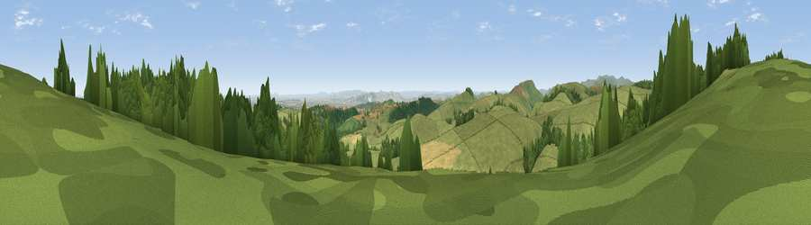

Viewpoint near Rhydycroesau
#12678 in England · top 43% of its area beats it · near RhydycroesauThe view, rendered

A 360° render of this exact spot computed from the terrain model, tree cover and land cover — summer colours, afternoon light, calibrated against photographs of famous viewpoints. Real trees, hedges and buildings will differ in detail.
The panorama
Grey silhouette: terrain skyline in each direction (720 bearings, Earth curvature and refraction included). Dashed green: skyline with trees (+15 m) and buildings (+8 m) as obstacles. Blue strip: how far the ground is visible on each bearing.
Where the view opens
Wedge length = distance to the farthest visible ground on that bearing (vegetation-aware). Rings at 10, 25 and 50 km.
What fills the view
75% grassland · 19% woodland · 5% cropland
Angular shares of the visible panorama (visual magnitude), not map area. Landscape diversity 0.31 (0–1 Shannon).
Key numbers
More beautiful places nearby
The staircase of upgrades: each row has a higher view potential than everything closer. Driving times are estimates from straight-line distance, calibrated against real road routing — check an actual route before setting out.
| Place | Direction | Drive | Score |
|---|---|---|---|
| Viewpoint near Rhydycroesau | NNW · 0 km | ~1 min | 65.8 |
| Bakers Hill | ESE · 2 km | ~6 min | 69.0 |
| Viewpoint near Bronygarth | NE · 4 km | ~10 min | 74.7 |
| Viewpoint near Trefonen | S · 5 km | ~12 min | 75.0 |
| Viewpoint near Melverley | SSE · 21 km | ~35 min | 78.2 |
| Viewpoint near Halfway House | SSE · 21 km | ~35 min | 83.3 |
| The Lawley | SE · 44 km | ~64 min | 85.8 |
| Viewpoint near Little Wenlock | ESE · 46 km | ~67 min | 86.6 |
52.88835, -3.13433 · source: screening · position refined by local search. Computed location — check access rights before visiting.